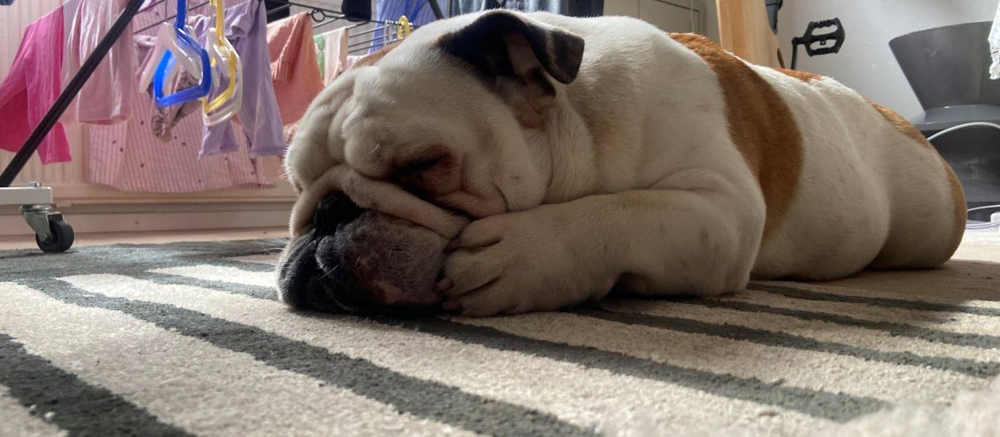

Yhteystiedot
Etusivu Galleria
Vilkaise galleriaa Takaisin etusivulle
|
Yhteystiedot: Paul & Kerem |
|
FAQ / Usein kysytyt kysymykset: Millaisia bulldogit ovat luonteeltaan? - Bulldogit ovat ihania Missä bulldogit asuvat? - Kotosalla yleensä Onko bulldogi hyvä ystävä? - Ainahan se |